Large Structural Capola
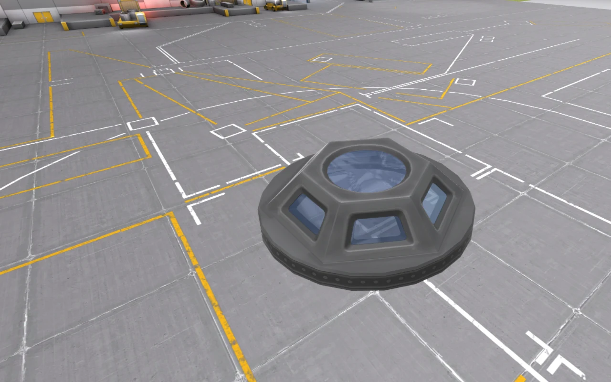

Large Structural Viewselage

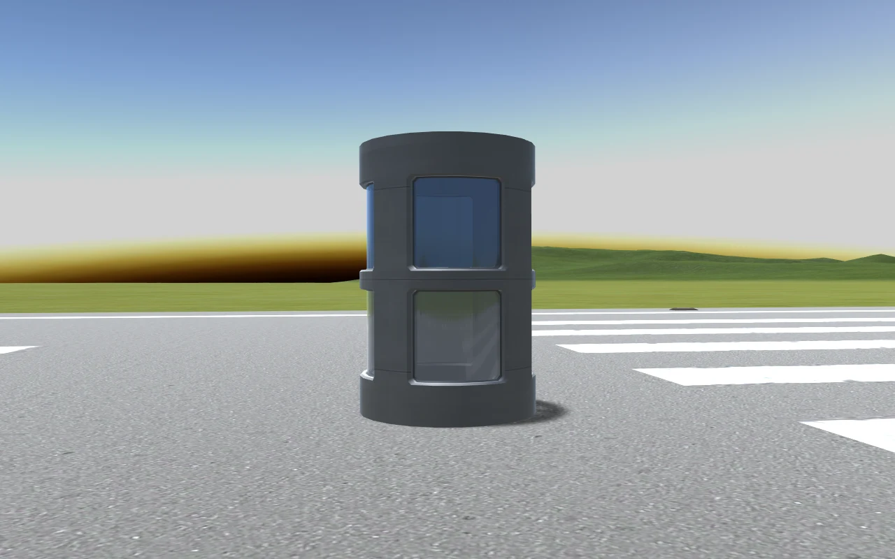
Large Structural Viewselage (Half Length)
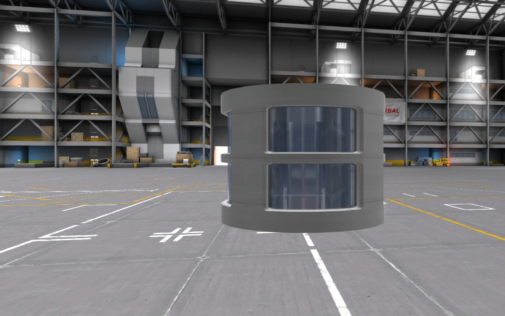
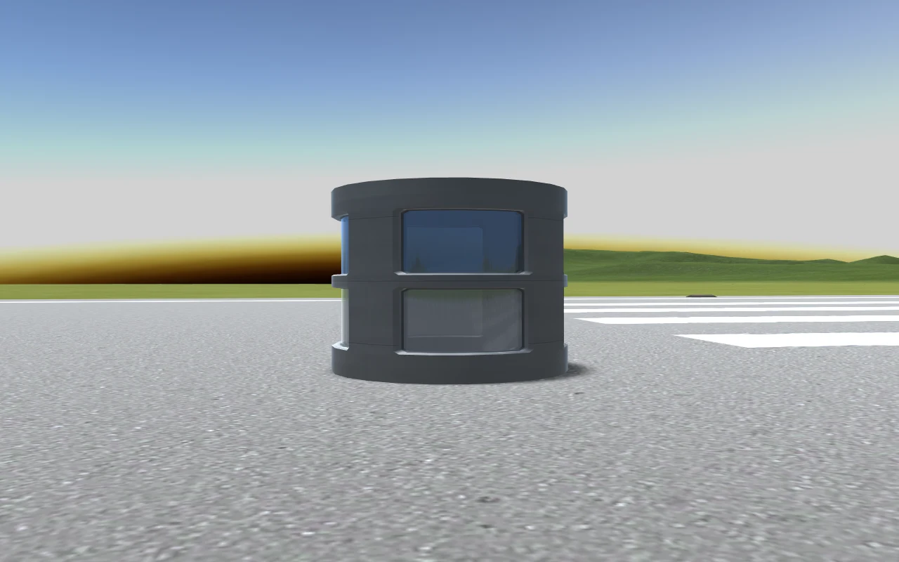
Large Tunnel Adapter
Large Tunnel Adapter (Double Length)
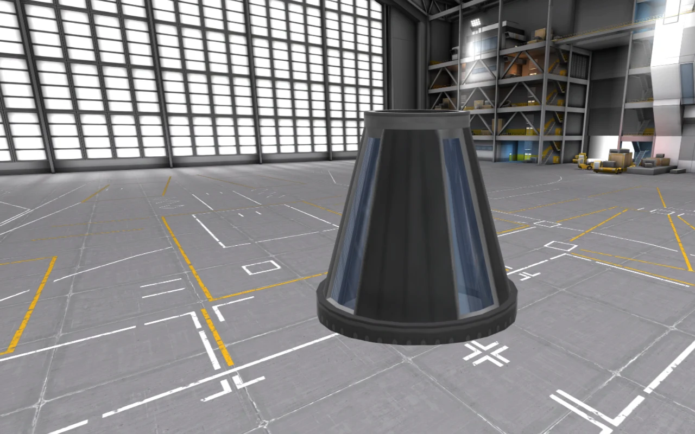

Medium Capola
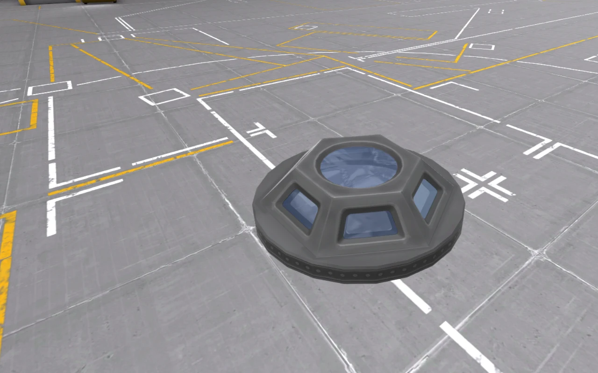
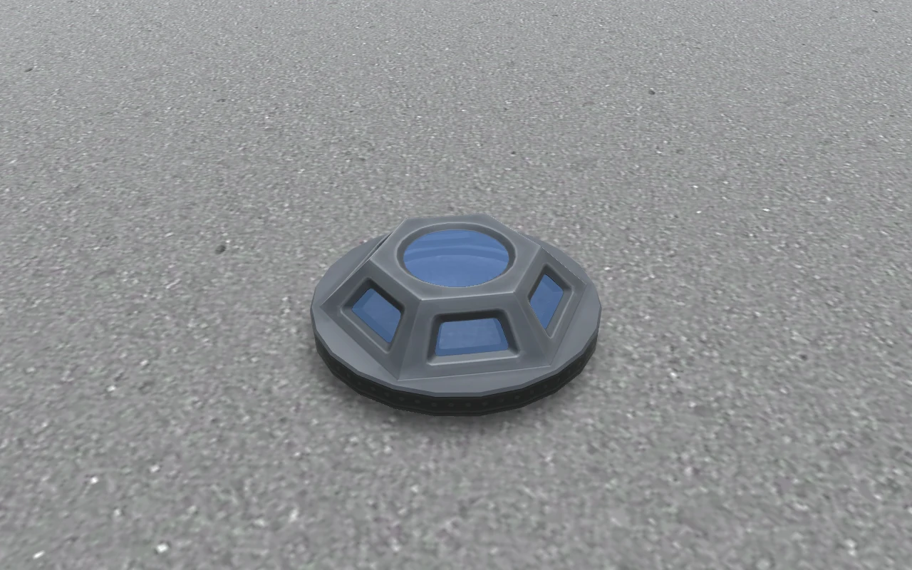
Medium Structural Viewselage

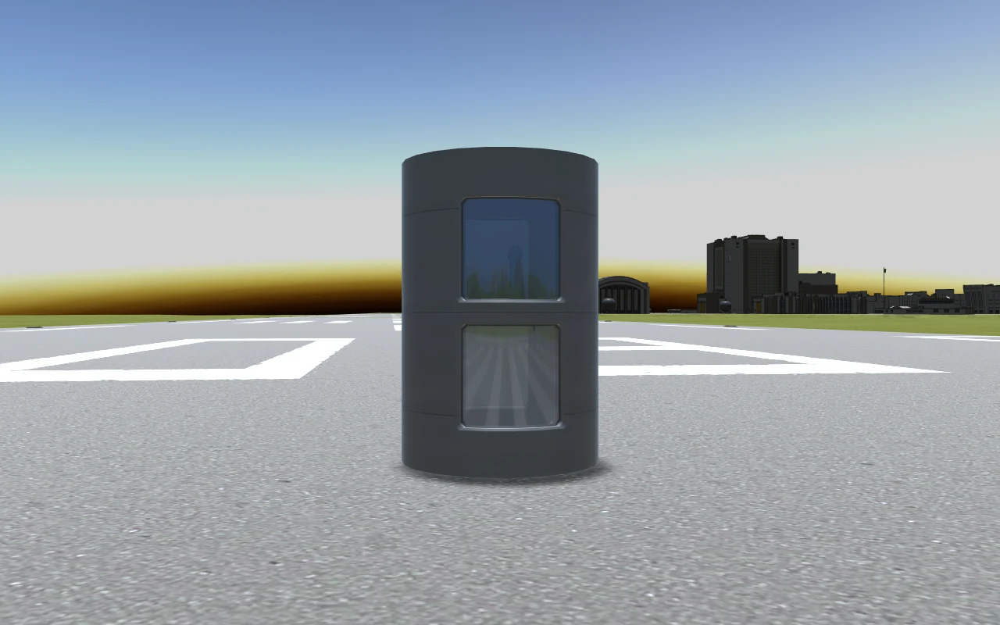
Medium Structural Viewselage (Half Length)
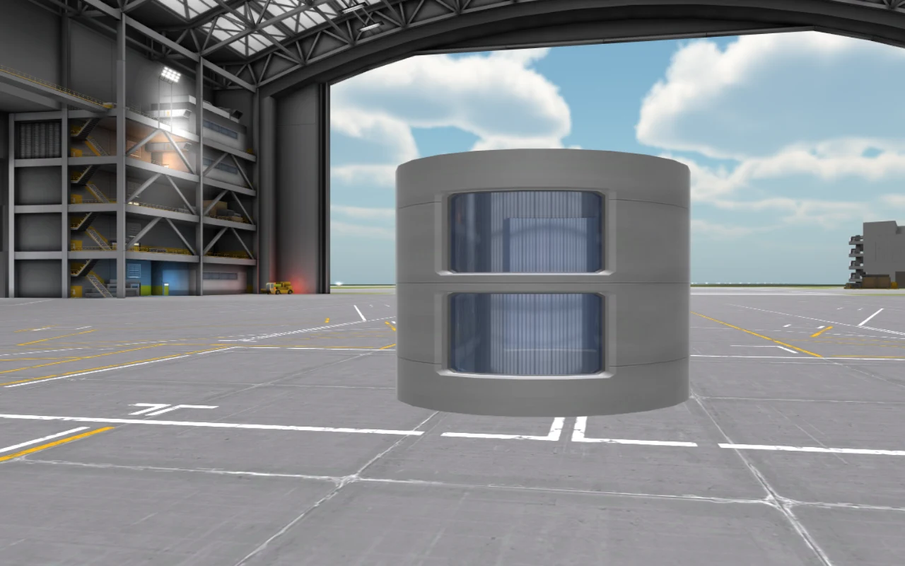
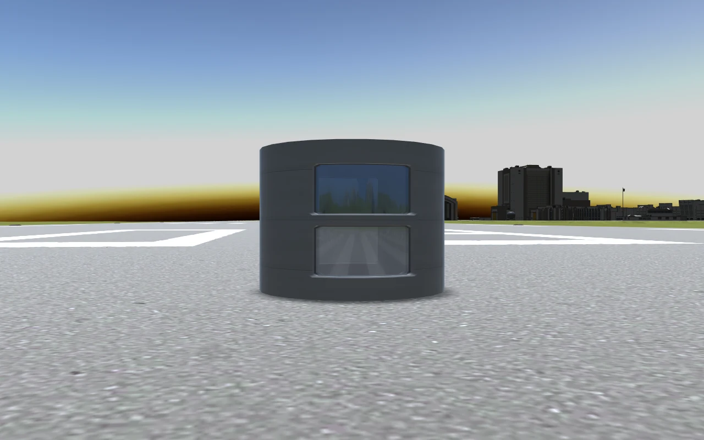
Mini-Capola
Structural Capola

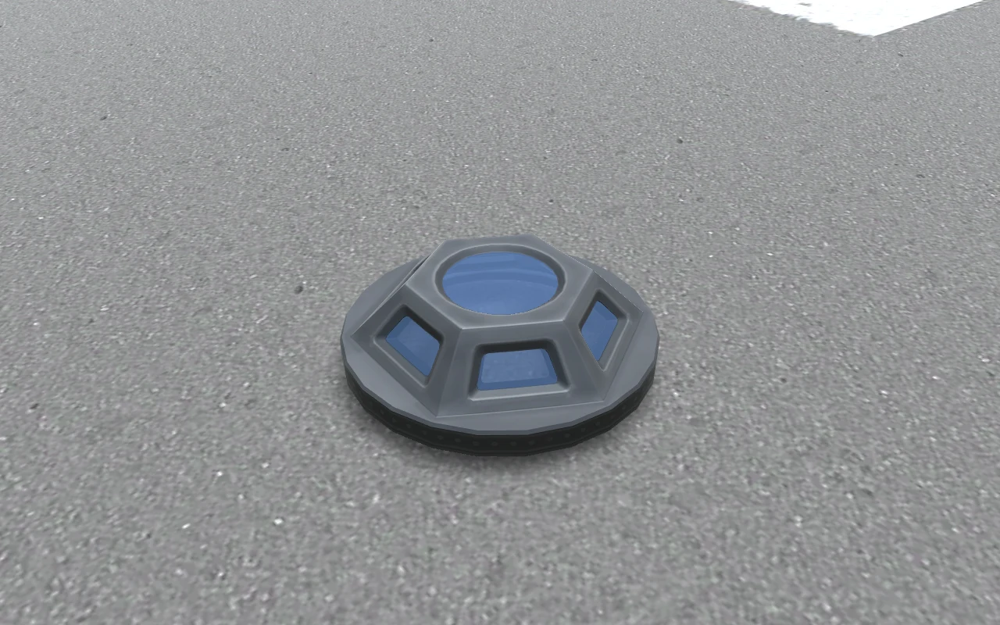
Structural Viewselage
Structural Viewselage (Half Length)
Tunnel Adapter
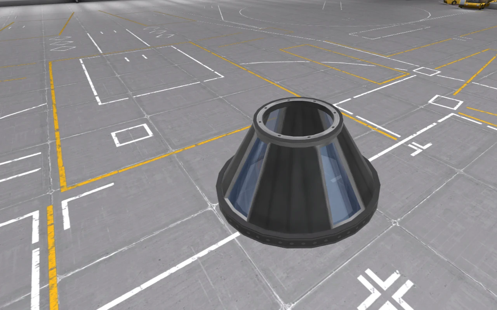

Tunnel Adapter (Double Length)
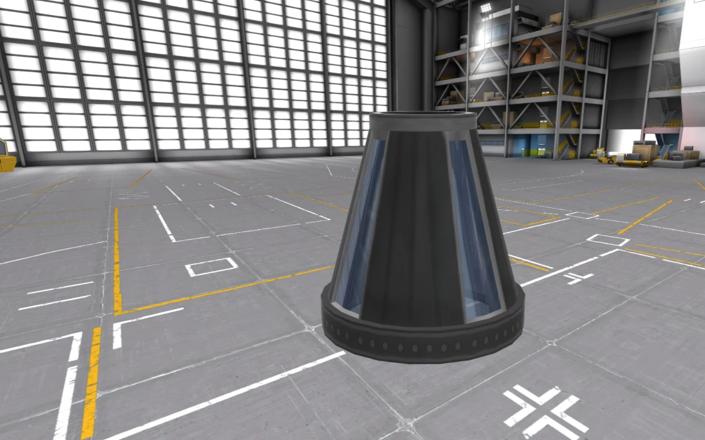
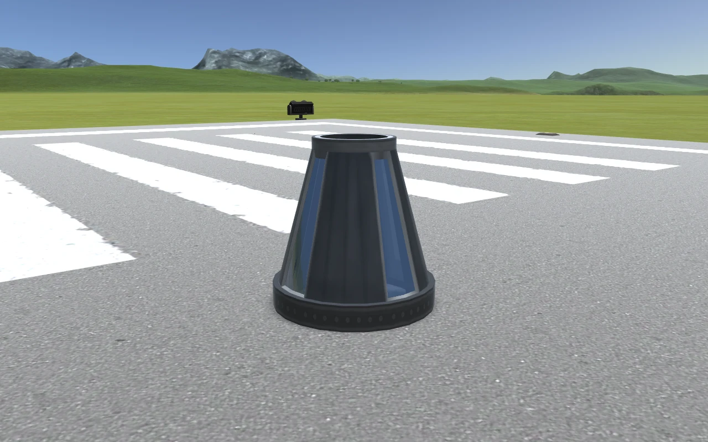
X-Large Structural Viewselage
X-Large Structural Viewselage (Half Length)
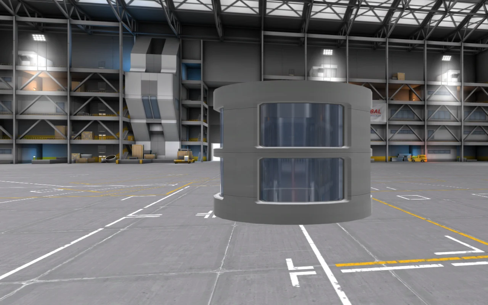
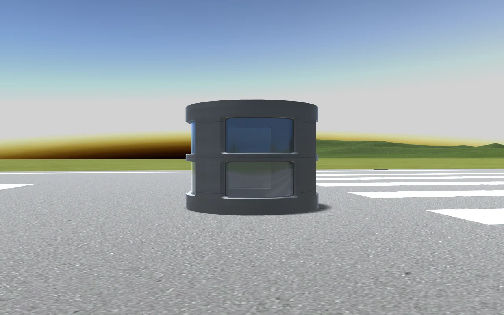